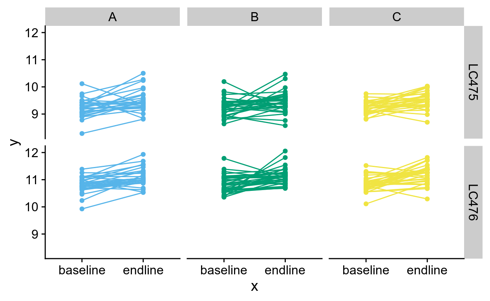
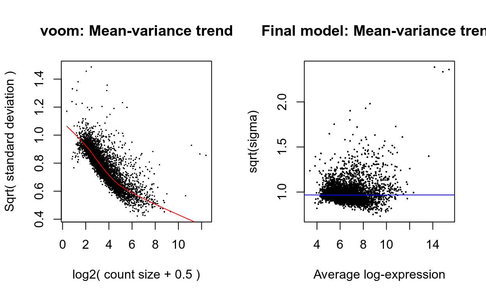
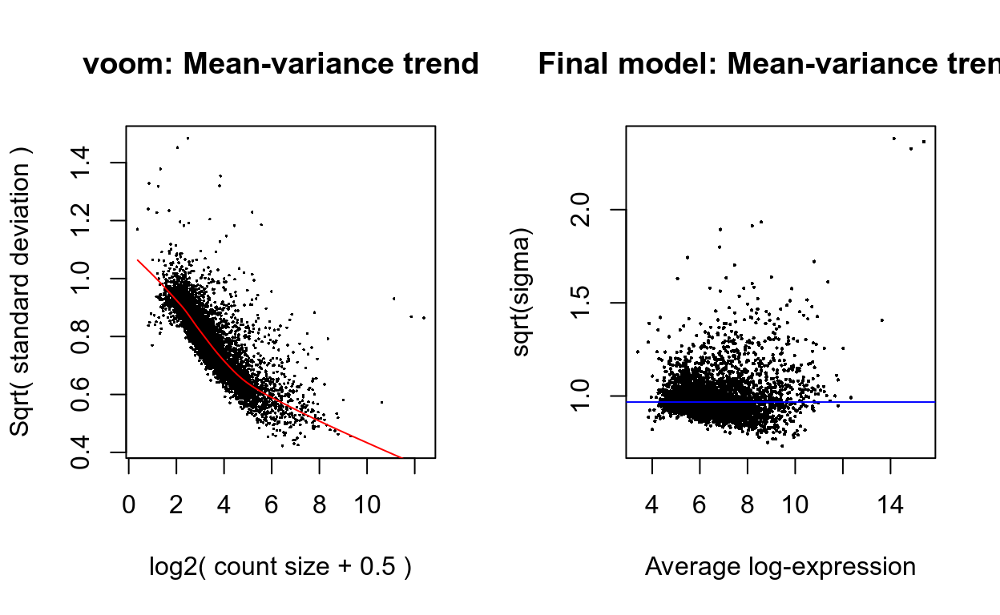
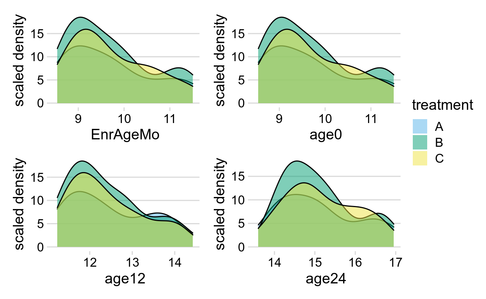
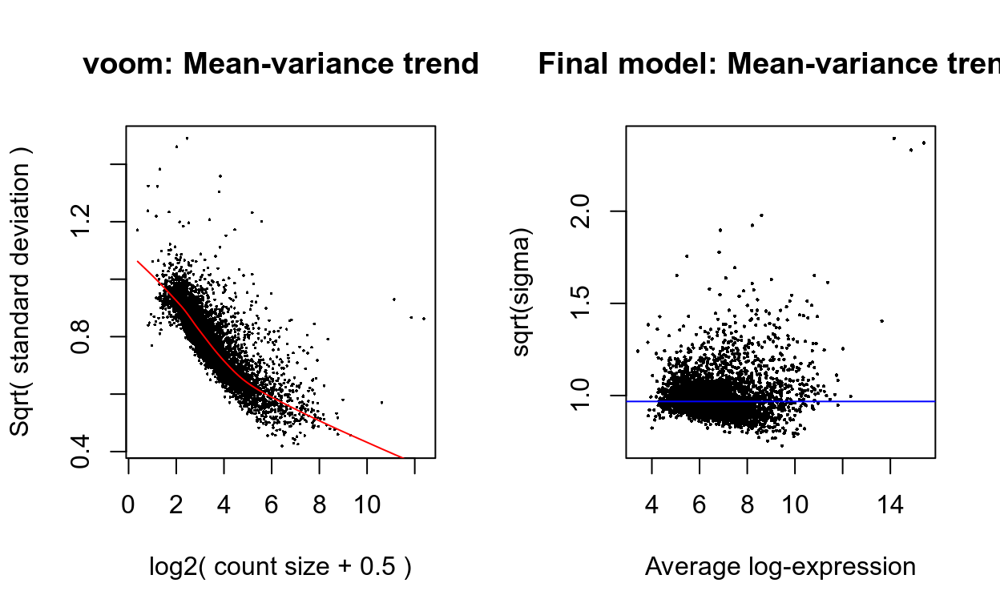
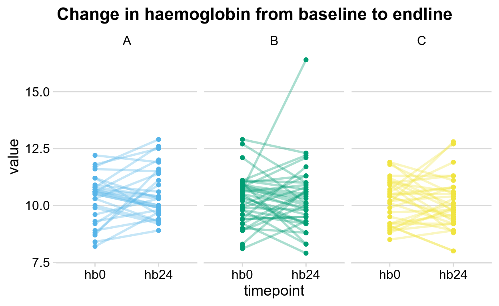
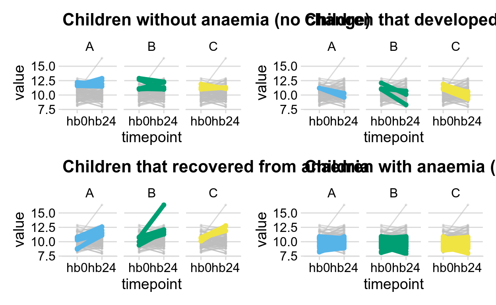

Table of Contents
Preparing the data
We start from the preprocessed SingleCellExperiment object created in ‘Preprocessing the Hayman/Pasricha (C084) ZIPT mini-bulk data sett’.
We convert the data to a DGEList object in preparation for analysis with edgeR.
Data pre-processing
Transformations from the raw-scale
For differential expression and related analyses, gene expression is rarely considered at the level of raw counts since libraries sequenced at a greater depth will result in higher counts. Rather, it is common practice to transform raw counts onto a scale that accounts for such library size differences. Popular transformations include counts per million (CPM), log2-counts per million (log-CPM), reads per kilobase of transcript per million (RPKM), and fragments per kilobase of transcript per million (FPKM).
In our analyses, CPM and log-CPM transformations are used regularly although they do not account for gene length differences as RPKM and FPKM values do. Whilst RPKM and FPKM values can just as well be used, CPM and log-CPM values can be calculated using a counts matrix alone and will suffice for the type of comparisons we are interested in1. Assuming that there are no differences in isoform usage between conditions, differential expression analyses look at gene expression changes between conditions rather than comparing expression across multiple genes or drawing conclusions on absolute levels of expression. In other words, gene lengths remain constant for comparisons of interest and any observed differences are a result of changes in condition rather than changes in gene length.
A CPM value of 1 for a gene equates to having 0.05 counts in the sample with the lowest sequencing depth (LC475_I24, library size approx. 0.05 million) or 0.44 counts in the sample with the greatest sequencing depth (LC475_E19, library size approx. 0.44 million).
The log-CPM values will be used for exploratory plots. The log-CPM values use an offset to the CPM values before converting to the log2-scale. By default, the offset is \(2/L\) where 2 is the ‘prior count’ and \(L\) is the average library size in millions, so the log-CPM values are related to the CPM values by \(log_{2}(CPM + 2/L)\). This calculation ensures that any two read counts with identical CPM values will also have identical log-CPM values. The prior count avoids taking the logarithm of zero, and also reduces spurious variability for genes with very low counts by shrinking all the inter-sample log-fold-changes towards zero, something that is helpful for exploratory plotting.
For this dataset, the average library size is about 0.17 million, so \(L \approx\) 0.17 and the minimum log-CPM value for each sample becomes \(log_{2}(CPM + 2/L) \approx\) 3.56 In other words, a count of zero for this data maps to a log-CPM value of 3.56 after adding the prior count or offset.
Removing genes that are lowly expressed
All datasets will include a mix of genes that are expressed and those that are not expressed. Whilst it is of interest to examine genes that are expressed in one condition but not in another, some genes are unexpressed throughout all samples. We have already removed all genes in this dataset that have zero counts across all 388 samples.
Plotting the distribution log-CPM values shows that a sizeable proportion of genes within each sample are either unexpressed or lowly-expressed with log-CPM values that are small (Figure 1).
Genes that do not have a worthwhile number of reads in any sample should be filtered out of the downstream analyses. There are several reasons for this. From a biological point of view, genes that not expressed at a biologically meaningful level in any condition are not of interest and are therefore best ignored. From a statistical point of view, removing low count genes allows the mean-variance relationship in the data to be estimated with greater reliability and also reduces the number of statistical tests that need to be carried out in downstream analyses looking at differential expression.
The filterByExpr() function in the edgeR package provides an automatic way to filter genes, while keeping as many genes as possible with worthwhile counts.
By default, the function keeps genes with about 10 read counts or more in a minimum number of samples, where the number of samples is chosen according to the minimum group sample size^The actual filtering uses CPM values rather than counts in order to avoid giving preference to samples with large library sizes.]. For this dataset, the median library size is about 0.16) million and 10 / 0.16, big.mark = “,”) approx. 62.2, so the filterByExpr() function keeps genes that have a CPM of 62.2 or more in at least 56 samples. A biologically interesting gene should be expressed in at least 56 samples because all the groups have at least 56 replicates within each plate. The cutoffs used depend on the sequencing depth and on the experimental design. If the library sizes had been larger then a lower CPM cutoff would have been chosen, because larger library sizes provide better resolution to explore more genes at lower expression levels. Alternatively, smaller library sizes decrease our ability to explore marginal genes and hence would have led to a higher CPM cutoff.
Using this criterion, the number of genes is reduced to 5,009, about 15% of the number that we started with (panel B of the Figure 1).
Figure 1: The density of log-CPM values for raw pre-filtered data (A) and post-filtered data (B) are shown for 36 randomly chosen samples. Dotted vertical lines mark the log-CPM threshold used in the filtering step.
Normalising gene expression distributions
During the sample preparation or sequencing process, external factors that are not of biological interest can affect the expression of individual samples. For example, samples processed in the first batch of an experiment can have higher expression overall when compared to samples processed in a second batch. It is assumed that all samples should have a similar range and distribution of expression values. Normalisation is required to ensure that the expression distributions of each sample are similar across the entire experiment.
Any plot showing the per sample expression distributions, such as a density or boxplot, is useful in determining whether any samples are dissimilar to others. Distributions of log-CPM values appear to be similar throughout all samples within this dataset (panel B of Figure 1).
Nonetheless, normalisation by the method of trimmed mean of M-values (TMM) (Robinson and Oshlack 2010) is performed using the calcNormFactors() function in edgeR. The normalisation factors calculated here are used as a scaling factor for the library sizes.
For this dataset the effect of TMM-normalisation is mild, as evident in the magnitude of the scaling factors, which are all relatively close to 1 (median = 1.01, IQR = 0.09, 5% and 95% quantiles = 0.85 and 1.15).
Figure 2 shows the expression distribution of 36 randomly chosen samples for unnormalised and normalised data, where distributions are noticeably different pre-normalisation and are similar post-normalisation.
Figure 2: Boxplots of log-CPM values showing expression distributions for unnormalised data (A) and normalised data (B) for 36 randomly chosen samples.
Unsupervised clustering of samples
In our opinion, one of the most important exploratory plots to examine for gene expression analyses is the multi-dimensional scaling (MDS) plot, or similar. The plot shows similarities and dissimilarities between samples in an unsupervised manner so that one can have an idea of the extent to which differential expression can be detected before carrying out formal tests. Ideally, samples would cluster well within the primary condition of interest, and any sample straying far from its group could be identified and followed up for sources of error or extra variation. If present, technical replicates should lie very close to one another.
Such a plot can be made in limma using the plotMDS() function. The first dimension represents the leading-fold-change that best separates samples and explains the largest proportion of variation in the data, with subsequent dimensions having a smaller effect and being orthogonal to the ones before it. When experimental design involves multiple factors, it is recommended that each factor is examined over several dimensions. If samples cluster by a given factor in any of these dimensions, it suggests that the factor contributes to expression differences and is worth including in the linear modelling. On the other hand, factors that show little or no effect may be left out of downstream analysis.
In this dataset, samples can be seen to cluster strongly by experimental batch over dimension 1. This dominates any variation due to timepoint or treatment. Keeping in mind that the first dimension explains the largest proportion of variation in the data, notice that the range of values over the dimensions become smaller as we move to higher dimensions.
Figure 3: MDS plots of log-CPM values over dimensions 1 and 2 with samples coloured by batch and over dimensions 3 and 4 with samples coloured by treatment and timepoint. Distances on the plot correspond to the leading fold-change, which is the average (root-mean-square) log2-fold-change for the 500 genes most divergent between each pair of samples by default.
Datasets where samples do not cluster by experimental group may show little or no evidence of differential expression in the downstream analysis.
Differential expression analysis
Creating a design matrix and contrasts
In this study, the primary interest is to see which genes are expressed at different levels between the different treatments and timepoints. In our analysis, linear models are fitted to the data with the assumption that the underlying data is normally distributed. To get started, a design matrix is set up with the group (i.e. the combination of timepoint and treatment), id (i.e. subject ID), and plate_number (i.e. batch) information.
Contrasts for pairwise comparisons between treatment and timepoint, within each id and blocking on plate_number, are set up in limma using the makeContrasts() function.
A key strength of limma’s linear modelling approach, is the ability accommodate arbitrary experimental complexity. Simple designs through to more complicated factorial designs and models with interaction terms can be handled relatively easily.
Removing heteroscedascity from count data
It has been shown that for RNA-seq count data, the variance is not independent of the mean (Law et al. 2014) – this is true of raw counts or when transformed to log-CPM values. Methods that model counts using a Negative Binomial distribution assume a quadratic mean-variance relationship. In limma, linear modelling is carried out on the log-CPM values which are assumed to be normally distributed and the mean-variance relationship is accommodated using precision weights calculated by the voom() function.
voom() converts raw counts to log-CPM values by automatically extracting library sizes and normalisation factors.
The mean-variance relationship of log-CPM values for this dataset is shown in the left-hand panel of Figure 4. Typically, the voom-plot shows a decreasing trend between the means and variances resulting from a combination of technical variation in the sequencing experiment and biological variation amongst the replicate samples from different cell populations. Experiments with high biological variation usually result in flatter trends, where variance values plateau at high expression values. Experiments with low biological variation tend to result in sharp decreasing trends.
Moreover, the voom-plot provides a visual check on the level of filtering performed upstream. If filtering of lowly-expressed genes is insufficient, a drop in variance levels can be observed at the low end of the expression scale due to very small counts. If this is observed, one should return to the earlier filtering step and increase the expression threshold applied to the dataset.
Coefficients not estimable: id356 id387
Coefficients not estimable: id356 id387 ![Means (x-axis) and variances (y-axis) of each gene are plotted to show the dependence between the two before voom is applied to the data (left panel) and how the trend is removed after voom precision weights are applied to the data (right panel). The plot on the left is created within the `voom()` function which extracts residual variances from fitting linear models to log-CPM transformed data. Variances are then rescaled to quarter-root variances (or square-root of standard deviations) and plotted against the average log2 count for each gene. The plot on the right is created using `plotSA()` which plots log2 residual standard deviations against mean log-CPM values. In both plots, each black dot represents a gene. On the left plot, the red curve shows the estimated mean-variance trend used to compute the voom weights. On the right plot, the average log2 residual standard deviation estimated by the empirical Bayes algorithm is marked by a horizontal blue line.](C084_Hayman_Pasricha.multi-sample_comparisons_files/voom-1.png)
Figure 4: Means (x-axis) and variances (y-axis) of each gene are plotted to show the dependence between the two before voom is applied to the data (left panel) and how the trend is removed after voom precision weights are applied to the data (right panel). The plot on the left is created within the voom() function which extracts residual variances from fitting linear models to log-CPM transformed data. Variances are then rescaled to quarter-root variances (or square-root of standard deviations) and plotted against the average log2 count for each gene. The plot on the right is created using plotSA() which plots log2 residual standard deviations against mean log-CPM values. In both plots, each black dot represents a gene. On the left plot, the red curve shows the estimated mean-variance trend used to compute the voom weights. On the right plot, the average log2 residual standard deviation estimated by the empirical Bayes algorithm is marked by a horizontal blue line.
Fitting linear models for comparisons of interest
Linear modelling in limma fits a separate model to the expression values for each gene. Next, empirical Bayes moderation is carried out by borrowing information across all the genes to obtain more precise estimates of gene-wise variability (Smyth 2004). The model’s residual variances are plotted against average expression values in Figure 4. It can be seen from this plot that the variance is no longer dependent on the mean expression level.
Results
Figure 1
Endline pairwise analyses between treatments
For a quick look at differential expression levels, the number of significantly up- and down-regulated genes can be summarised in a table. Significance is defined using an adjusted p-value cutoff that is set at 5% by default.
| Down | NotSig | Up | |
|---|---|---|---|
| A.endline_vs_B.endline | 14 | 4983 | 12 |
| A.endline_vs_C.endline | 19 | 4981 | 9 |
| B.endline_vs_C.endline | 25 | 4934 | 50 |
TODO Describe other outputs
Adjusted by sex
TODO: Decide on strategy of fixed/random effects to achieve this aim.
Figure 2
Endline vs. baseline
For a quick look at differential expression levels, the number of significantly up- and down-regulated genes can be summarised in a table. Significance is defined using an adjusted p-value cutoff that is set at 5% by default.
| Down | NotSig | Up | |
|---|---|---|---|
| A.endline_vs_A.baseline | 409 | 4057 | 543 |
| B.endline_vs_B.baseline | 60 | 4734 | 215 |
| C.endline_vs_C.baseline | 138 | 4565 | 306 |
TODO Describe other outputs
Check for differences in age at enrolment
Figure 5 shows the distribution of age at enrolment (age0) by treatment arm. There is no significant difference in age0 by treatment arm (ANOVA, \(P =\) 0.998) nor is there an association when age0 is binned as \((8.5-10]\) or \((10-11.5]\) (\(\chi^2\)-test \(P =\) 0.87).
Figure 5: Density estimates of age0 in each treatment arm. The density curves were scaled such that the area under each curve corresponds to the total number of subjects in each treatment arm.
Figure 3
Gene expression by Height for Age at endline
Figure 6 shows the distribution of height for age at endline (HAZ24) by treatment arm. There is 1 samples without a HAZ24 measurement (id: 348).
Figure 6: Density estimates of HAZ24 in each treatment arm. The density curves were scaled such that the area under each curve corresponds to the total number of subjects in each treatment arm. Samples to the left of the vertical dashed line are Stunted24.
Stunting at endline (Stunted24) is defined as HAZ24 \(< -2\). The table below classifies subjects by treatment and Stunted24.
| Stunted24/treatment | A | B | C |
|---|---|---|---|
| FALSE | 17 | 26 | 22 |
| TRUE | 12 | 13 | 11 |
| NA | 0 | 1 | 0 |
HAZ24
We subset the data to just the endline timepoint and update the design matrix to include HAZ24 in addition to treatment, id (i.e. subject ID), and plate_number (i.e. batch) information.
Contrasts for association of gene expression with HAZ24, accounting for group, id, and plate_number, are set up in limma using the makeContrasts() function.

For a quick look at differential expression levels, the number of significantly up- and down-regulated genes can be summarised in a table. Significance is defined using an adjusted p-value cutoff that is set at 5% by default.
| Down | NotSig | Up | |
|---|---|---|---|
| HAZ24 | 0 | 5009 | 0 |
TODO Describe other outputs
Stunted24
We subset the data to just the endline timepoint and update the design matrix to include Stunted24 in addition to treatment, id (i.e. subject ID), and plate_number (i.e. batch) information.
Contrasts for association of gene expression with Stunted24, accounting for group, id, and plate_number, are set up in limma using the makeContrasts() function.
For a quick look at differential expression levels, the number of significantly up- and down-regulated genes can be summarised in a table. Significance is defined using an adjusted p-value cutoff that is set at 5% by default.
| Down | NotSig | Up | |
|---|---|---|---|
| Stunted24 | 0 | 5009 | 0 |
TODO Describe other outputs
Gene expression by Weight for Height at endline
Figure 7 shows the distribution of weight for height at endline (WHZ24) by treatment arm. There is 1 samples without a WHZ24 measurement (id: 348).
Figure 7: Density estimates of WHZ24 in each treatment arm. The density curves were scaled such that the area under each curve corresponds to the total number of subjects in each treatment arm. Samples to the left of the vertical dashed line are Wasted24.
Wasting at endline (Wasted24) is defined as WHZ24 \(< -2\). The table below classifies subjects by treatment and Wasted24.
| Wasted24/treatment | A | B | C |
|---|---|---|---|
| FALSE | 24 | 35 | 30 |
| TRUE | 5 | 4 | 3 |
| NA | 0 | 1 | 0 |
WHZ24
We subset the data to just the endline timepoint and update the design matrix to include WHZ24 in addition to treatment, id (i.e. subject ID), and plate_number (i.e. batch) information.
Contrasts for association of gene expression with WHZ24, accounting for group, id, and plate_number, are set up in limma using the makeContrasts() function.
For a quick look at differential expression levels, the number of significantly up- and down-regulated genes can be summarised in a table. Significance is defined using an adjusted p-value cutoff that is set at 5% by default.
| Down | NotSig | Up | |
|---|---|---|---|
| WHZ24 | 0 | 5009 | 0 |
TODO Describe other outputs
Wasted24
We subset the data to just the endline timepoint and update the design matrix to include Wasted24 in addition to treatment, id (i.e. subject ID), and plate_number (i.e. batch) information.
Contrasts for association of gene expression with Wasted24, accounting for group, id, and plate_number, are set up in limma using the makeContrasts() function.

For a quick look at differential expression levels, the number of significantly up- and down-regulated genes can be summarised in a table. Significance is defined using an adjusted p-value cutoff that is set at 5% by default.
| Down | NotSig | Up | |
|---|---|---|---|
| Wasted24 | 2 | 5003 | 4 |
TODO Describe other outputs
Gene expression by Weight for Age at endline
Figure 8 shows the distribution of weight for age at endline (WAZ24) by treatment arm. There is 1 samples without a WAZ24 measurement (id: 348).
Figure 8: Density estimates of WAZ24 in each treatment arm. The density curves were scaled such that the area under each curve corresponds to the total number of subjects in each treatment arm. Samples to the left of the vertical dashed line are Underweight24.
Underweight at endline (Underweight24) is defined as WAZ24 \(< -2\). The table below classifies subjects by treatment and Underweight24.
| Underweight24/treatment | A | B | C |
|---|---|---|---|
| FALSE | 18 | 31 | 27 |
| TRUE | 11 | 8 | 6 |
| NA | 0 | 1 | 0 |
WAZ24
We subset the data to just the endline timepoint and update the design matrix to include WAZ24 in addition to treatment, id (i.e. subject ID), and plate_number (i.e. batch) information.
Contrasts for association of gene expression with WAZ24, accounting for group, id, and plate_number, are set up in limma using the makeContrasts() function.
For a quick look at differential expression levels, the number of significantly up- and down-regulated genes can be summarised in a table. Significance is defined using an adjusted p-value cutoff that is set at 5% by default.
| Down | NotSig | Up | |
|---|---|---|---|
| WAZ24 | 0 | 5009 | 0 |
TODO Describe other outputs
Underweight24
We subset the data to just the endline timepoint and update the design matrix to include Underweight24 in addition to treatment, id (i.e. subject ID), and plate_number (i.e. batch) information.
Contrasts for association of gene expression with Underweight24, accounting for group, id, and plate_number, are set up in limma using the makeContrasts() function.

For a quick look at differential expression levels, the number of significantly up- and down-regulated genes can be summarised in a table. Significance is defined using an adjusted p-value cutoff that is set at 5% by default.
| Down | NotSig | Up | |
|---|---|---|---|
| Underweight24 | 0 | 5009 | 0 |
TODO Describe other outputs
Gene expression by age
TODO: It’s not clear what comparison is being requested from Tom’s email.
TODO: It’s not clear which age column to use (EnrAgeMo, age0, age12, or age24).
factor(0)
102 Levels: 102 103 104 106 107 108 109 110 111 112 113 114 ... 387
[1] 348
102 Levels: 102 103 104 106 107 108 109 110 111 112 113 114 ... 387
[1] 348
102 Levels: 102 103 104 106 107 108 109 110 111 112 113 114 ... 387
factor(0)
102 Levels: 102 103 104 106 107 108 109 110 111 112 113 114 ... 387
Gene expression by sex
TODO: It’s not clear what comparison is being requested from Tom’s email.
Figure 4
Gene expression by Haemoglobin at endline
Figure 9 shows the distribution of weight for age at endline (hb24) by treatment arm. There is 2 samples without a hb24 measurement (id: 147 and 348).
Figure 9: Density estimates of hb24 in each treatment arm. The density curves were scaled such that the area under each curve corresponds to the total number of subjects in each treatment arm. Samples to the left of the vertical dashed line are Anaemic24.
Anaemic at endline (Anaemic24) is defined as hb24 \(< -2\). The table below classifies subjects by treatment and Anaemic24.
| Anaemic24/treatment | A | B | C |
|---|---|---|---|
| FALSE | 9 | 9 | 6 |
| TRUE | 20 | 29 | 27 |
| NA | 0 | 2 | 0 |
hb24
We subset the data to just the endline timepoint and update the design matrix to include hb24 in addition to treatment, id (i.e. subject ID), and plate_number (i.e. batch) information.
Contrasts for association of gene expression with hb24, accounting for group, id, and plate_number, are set up in limma using the makeContrasts() function.
For a quick look at differential expression levels, the number of significantly up- and down-regulated genes can be summarised in a table. Significance is defined using an adjusted p-value cutoff that is set at 5% by default.
| Down | NotSig | Up | |
|---|---|---|---|
| hb24 | 112 | 4849 | 48 |
TODO Describe other outputs
Anaemic24
We subset the data to just the endline timepoint and update the design matrix to include Anaemic24 in addition to treatment, id (i.e. subject ID), and plate_number (i.e. batch) information.
Contrasts for association of gene expression with Anaemic24, accounting for group, id, and plate_number, are set up in limma using the makeContrasts() function.

For a quick look at differential expression levels, the number of significantly up- and down-regulated genes can be summarised in a table. Significance is defined using an adjusted p-value cutoff that is set at 5% by default.
| Down | NotSig | Up | |
|---|---|---|---|
| Anaemic24 | 7 | 4984 | 18 |
TODO Describe other outputs
Correlation between recovering from anaemia and being in a treatment group
TODO: It’s not clear what comparison is being requested from Tom’s email.


Anaemia rates between treatments at baseline.
FALSE TRUE
A 6 23
B 8 30
C 9 24
Pearson's Chi-squared test
data: table(tmp2$treatment, tmp2$Anaemic0)
X-squared = 0.50895, df = 2, p-value = 0.7753Anaemic rates between treatments at endline
FALSE TRUE
A 9 20
B 9 29
C 6 27
Pearson's Chi-squared test
data: table(tmp2$treatment, tmp2$Anaemic24)
X-squared = 1.4013, df = 2, p-value = 0.4963Anaemic rates between treatments at baseline and endline
treatment Anaemic0 Anaemic24 n
1 A FALSE FALSE 4
2 A FALSE TRUE 2
3 A TRUE FALSE 5
4 A TRUE TRUE 18
5 B FALSE FALSE 5
6 B FALSE TRUE 3
7 B TRUE FALSE 4
8 B TRUE TRUE 26
9 C FALSE FALSE 3
10 C FALSE TRUE 6
11 C TRUE FALSE 3
12 C TRUE TRUE 21Treatment A
FALSE TRUE
FALSE 4 2
TRUE 5 18
Fisher's Exact Test for Count Data
data: z[, , "A"]
p-value = 0.05588
alternative hypothesis: true odds ratio is not equal to 1
95 percent confidence interval:
0.7148579 93.9033412
sample estimates:
odds ratio
6.609192 Treatment B
FALSE TRUE
FALSE 5 3
TRUE 4 26
Fisher's Exact Test for Count Data
data: z[, , "B"]
p-value = 0.01013
alternative hypothesis: true odds ratio is not equal to 1
95 percent confidence interval:
1.350045 92.748871
sample estimates:
odds ratio
9.878826 Treatment C
FALSE TRUE
FALSE 3 6
TRUE 3 21
Fisher's Exact Test for Count Data
data: z[, , "C"]
p-value = 0.3092
alternative hypothesis: true odds ratio is not equal to 1
95 percent confidence interval:
0.3548773 32.2771518
sample estimates:
odds ratio
3.345343 Transitions between treatments
FALSE->FALSE FALSE->TRUE TRUE->FALSE TRUE->TRUE
A 4 2 5 18
B 5 3 4 26
C 3 6 3 21
Pearson's Chi-squared test
data: zz
X-squared = 3.7589, df = 6, p-value = 0.7093Children that recovered from anaemia
Pearson's Chi-squared test
data: zz[, c("TRUE->FALSE", "TRUE->TRUE")]
X-squared = 0.95138, df = 2, p-value = 0.6215Children that developed anaemia
Pearson's Chi-squared test
data: zz[, c("FALSE->FALSE", "FALSE->TRUE")]
X-squared = 2.1272, df = 2, p-value = 0.3452Classifying as ‘recovered’ or ‘not recovered’ (including those that never go anaemia).
not recovered recovered
A 24 5
B 34 4
C 30 3
Pearson's Chi-squared test
data: zzz
X-squared = 1.0971, df = 2, p-value = 0.5778Additional information
The following are available on request:
- Full CSV tables of any data presented.
- PDF/PNG files of any static plots.
Session info
─ Session info ─────────────────────────────────────────────────────
setting value
version R version 4.0.0 (2020-04-24)
os Ubuntu 18.04.5 LTS
system x86_64, linux-gnu
ui X11
language en_AU:en
collate en_AU.UTF-8
ctype en_AU.UTF-8
tz Australia/Melbourne
date 2020-08-27
─ Packages ─────────────────────────────────────────────────────────
! package * version date lib source
P AnnotationDbi 1.50.3 2020-07-25 [?] Bioconductor
P assertthat 0.2.1 2019-03-21 [?] CRAN (R 4.0.0)
P backports 1.1.8 2020-06-17 [?] CRAN (R 4.0.0)
P Biobase * 2.48.0 2020-04-27 [?] Bioconductor
P BiocGenerics * 0.34.0 2020-04-27 [?] Bioconductor
P BiocManager 1.30.10 2019-11-16 [?] CRAN (R 4.0.0)
P BiocParallel * 1.22.0 2020-04-27 [?] Bioconductor
P BiocStyle 2.16.0 2020-04-27 [?] Bioconductor
P bit 4.0.4 2020-08-04 [?] CRAN (R 4.0.0)
P bit64 4.0.2 2020-07-30 [?] CRAN (R 4.0.0)
P bitops 1.0-6 2013-08-17 [?] CRAN (R 4.0.0)
P blob 1.2.1 2020-01-20 [?] CRAN (R 4.0.0)
P cli 2.0.2 2020-02-28 [?] CRAN (R 4.0.0)
P colorspace 1.4-1 2019-03-18 [?] CRAN (R 4.0.0)
P cowplot * 1.0.0 2019-07-11 [?] CRAN (R 4.0.0)
P crayon 1.3.4 2017-09-16 [?] CRAN (R 4.0.0)
P DBI 1.1.0 2019-12-15 [?] CRAN (R 4.0.0)
P DelayedArray * 0.14.1 2020-07-14 [?] Bioconductor
P digest 0.6.25 2020-02-23 [?] CRAN (R 4.0.0)
P distill 0.8 2020-06-04 [?] CRAN (R 4.0.0)
P dplyr 1.0.1 2020-07-31 [?] CRAN (R 4.0.0)
P edgeR * 3.30.3 2020-06-02 [?] Bioconductor
P ellipsis 0.3.1 2020-05-15 [?] CRAN (R 4.0.0)
P evaluate 0.14 2019-05-28 [?] CRAN (R 4.0.0)
P fansi 0.4.1 2020-01-08 [?] CRAN (R 4.0.0)
P farver 2.0.3 2020-01-16 [?] CRAN (R 4.0.0)
P generics 0.0.2 2018-11-29 [?] CRAN (R 4.0.0)
P GenomeInfoDb * 1.24.2 2020-06-15 [?] Bioconductor
P GenomeInfoDbData 1.2.3 2020-05-21 [?] Bioconductor
P GenomicRanges * 1.40.0 2020-04-27 [?] Bioconductor
P gghighlight * 0.3.0 2020-03-29 [?] CRAN (R 4.0.0)
P ggplot2 * 3.3.2 2020-06-19 [?] CRAN (R 4.0.0)
P Glimma 1.16.0 2020-04-27 [?] Bioconductor
P glue 1.4.1 2020-05-13 [?] CRAN (R 4.0.0)
P GO.db 3.11.4 2020-07-22 [?] Bioconductor
P gtable 0.3.0 2019-03-25 [?] CRAN (R 4.0.0)
P here * 0.1 2017-05-28 [?] CRAN (R 4.0.0)
P highr 0.8 2019-03-20 [?] CRAN (R 4.0.0)
P htmltools 0.5.0 2020-06-16 [?] CRAN (R 4.0.0)
P IRanges * 2.22.2 2020-05-21 [?] Bioconductor
P janitor 2.0.1 2020-04-12 [?] CRAN (R 4.0.0)
P jsonlite 1.7.0 2020-06-25 [?] CRAN (R 4.0.0)
P knitr 1.29 2020-06-23 [?] CRAN (R 4.0.0)
P labeling 0.3 2014-08-23 [?] CRAN (R 4.0.0)
P lattice 0.20-41 2020-04-02 [5] CRAN (R 4.0.0)
P lifecycle 0.2.0 2020-03-06 [?] CRAN (R 4.0.0)
P limma * 3.44.3 2020-06-12 [?] Bioconductor
P locfit 1.5-9.4 2020-03-25 [?] CRAN (R 4.0.0)
P lubridate 1.7.9 2020-06-08 [?] CRAN (R 4.0.0)
P magrittr 1.5 2014-11-22 [?] CRAN (R 4.0.0)
P Matrix 1.2-18 2019-11-27 [5] CRAN (R 4.0.0)
P matrixStats * 0.56.0 2020-03-13 [?] CRAN (R 4.0.0)
P memoise 1.1.0 2017-04-21 [?] CRAN (R 4.0.0)
P msigdbr * 7.1.1 2020-05-14 [?] CRAN (R 4.0.0)
P munsell 0.5.0 2018-06-12 [?] CRAN (R 4.0.0)
P org.Hs.eg.db 3.11.4 2020-06-15 [?] Bioconductor
P patchwork * 1.0.1 2020-06-22 [?] CRAN (R 4.0.0)
P pheatmap * 1.0.12 2019-01-04 [?] CRAN (R 4.0.0)
P pillar 1.4.6 2020-07-10 [?] CRAN (R 4.0.0)
P pkgconfig 2.0.3 2019-09-22 [?] CRAN (R 4.0.0)
P purrr 0.3.4 2020-04-17 [?] CRAN (R 4.0.0)
P R6 2.4.1 2019-11-12 [?] CRAN (R 4.0.0)
P RColorBrewer 1.1-2 2014-12-07 [?] CRAN (R 4.0.0)
P Rcpp 1.0.5 2020-07-06 [?] CRAN (R 4.0.0)
P RCurl 1.98-1.2 2020-04-18 [?] CRAN (R 4.0.0)
P rlang 0.4.7 2020-07-09 [?] CRAN (R 4.0.0)
P rmarkdown 2.3 2020-06-18 [?] CRAN (R 4.0.0)
P rprojroot 1.3-2 2018-01-03 [?] CRAN (R 4.0.0)
P RSQLite 2.2.0 2020-01-07 [?] CRAN (R 4.0.0)
P S4Vectors * 0.26.1 2020-05-16 [?] Bioconductor
P scales * 1.1.1 2020-05-11 [?] CRAN (R 4.0.0)
P sessioninfo 1.1.1 2018-11-05 [?] CRAN (R 4.0.0)
P SingleCellExperiment * 1.10.1 2020-04-28 [?] Bioconductor
P snakecase 0.11.0 2019-05-25 [?] CRAN (R 4.0.0)
P stringi 1.4.6 2020-02-17 [?] CRAN (R 4.0.0)
P stringr 1.4.0 2019-02-10 [?] CRAN (R 4.0.0)
P SummarizedExperiment * 1.18.2 2020-07-09 [?] Bioconductor
P tibble 3.0.3 2020-07-10 [?] CRAN (R 4.0.0)
P tidyr 1.1.1 2020-07-31 [?] CRAN (R 4.0.0)
P tidyselect 1.1.0 2020-05-11 [?] CRAN (R 4.0.0)
P vctrs 0.3.2 2020-07-15 [?] CRAN (R 4.0.0)
P withr 2.2.0 2020-04-20 [?] CRAN (R 4.0.0)
P xfun 0.16 2020-07-24 [?] CRAN (R 4.0.0)
P XVector 0.28.0 2020-04-27 [?] Bioconductor
P yaml 2.2.1 2020-02-01 [?] CRAN (R 4.0.0)
P zlibbioc 1.34.0 2020-04-27 [?] Bioconductor
[1] /home/peter/SCORE/C084_Hayman_Pasricha/renv/library/R-4.0/x86_64-pc-linux-gnu
[2] /tmp/RtmpVhm0n2/renv-system-library
[3] /usr/local/lib/R/site-library
[4] /usr/lib/R/site-library
[5] /usr/lib/R/library
P ── Loaded and on-disk path mismatch.Law, C. W., Y. Chen, W. Shi, and G. K. Smyth. 2014. “Voom: Precision Weights Unlock Linear Model Analysis Tools for Rna-Seq Read Counts.” Genome Biol. 15 (2): R29. https://www.ncbi.nlm.nih.gov/pubmed/24485249.
Robinson, M. D., and A. Oshlack. 2010. “A Scaling Normalization Method for Differential Expression Analysis of Rna-Seq Data.” Genome Biol. 11 (3): R25. https://www.ncbi.nlm.nih.gov/pubmed/20196867.
Smyth, Gordon K. 2004. “Linear Models and Empirical Bayes Methods for Assessing Differential Expression in Microarray Experiments.” Statistical Applications in Genetics and Molecular Biology 3 (1).
Furthermore, the 3’-tag sequencing of SCORE’s mini-bulk protocol basically negates the need to account for gene length differences.↩︎